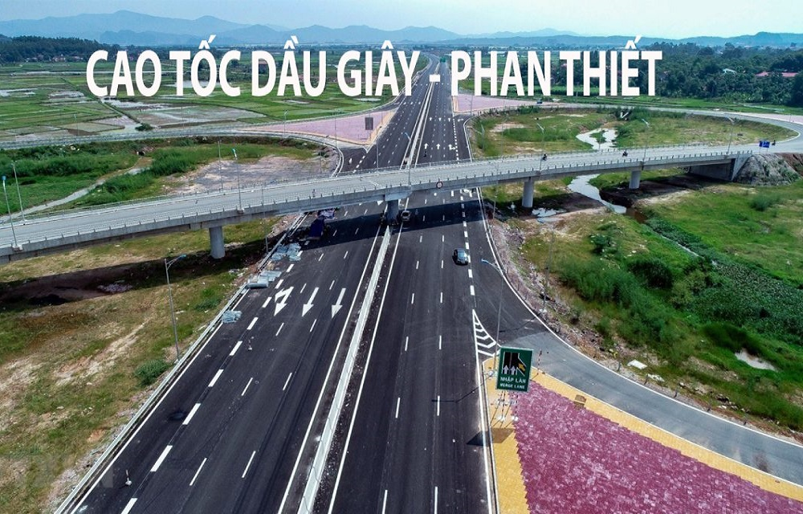
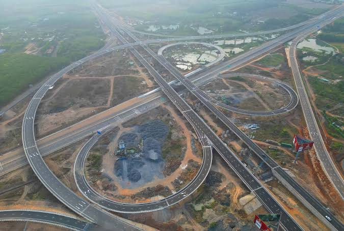
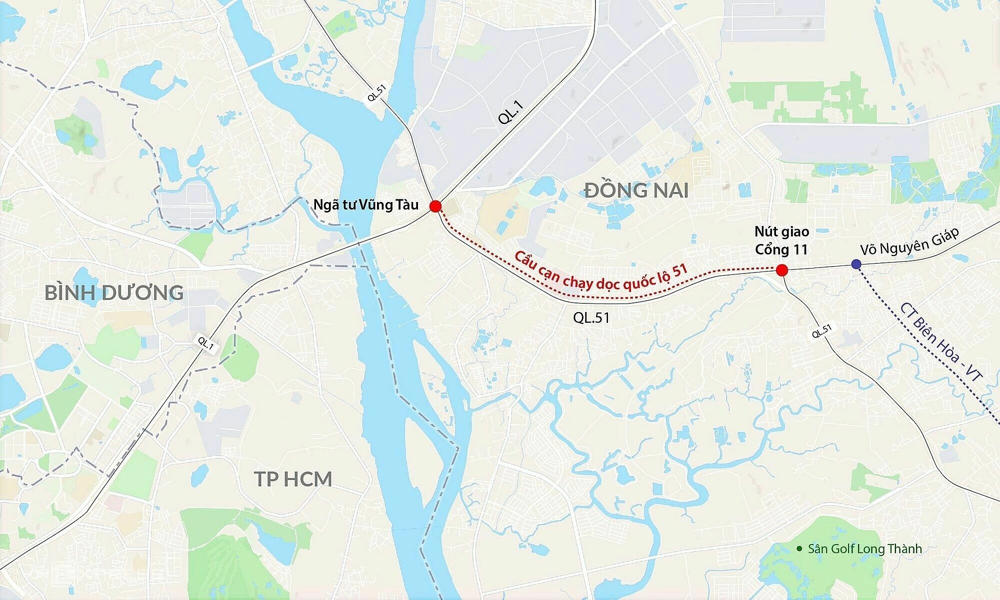
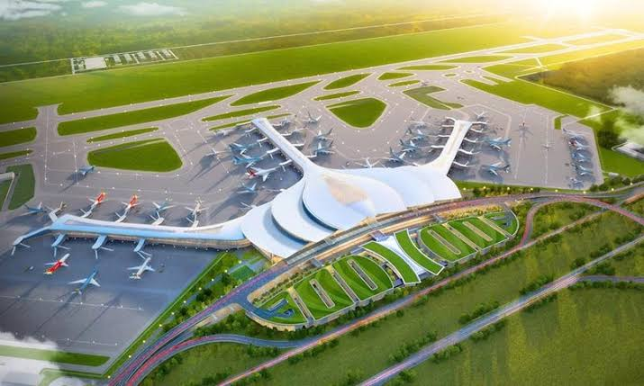
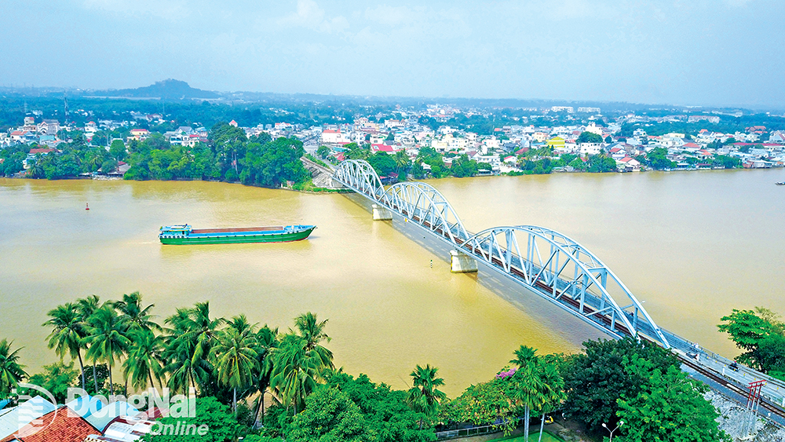
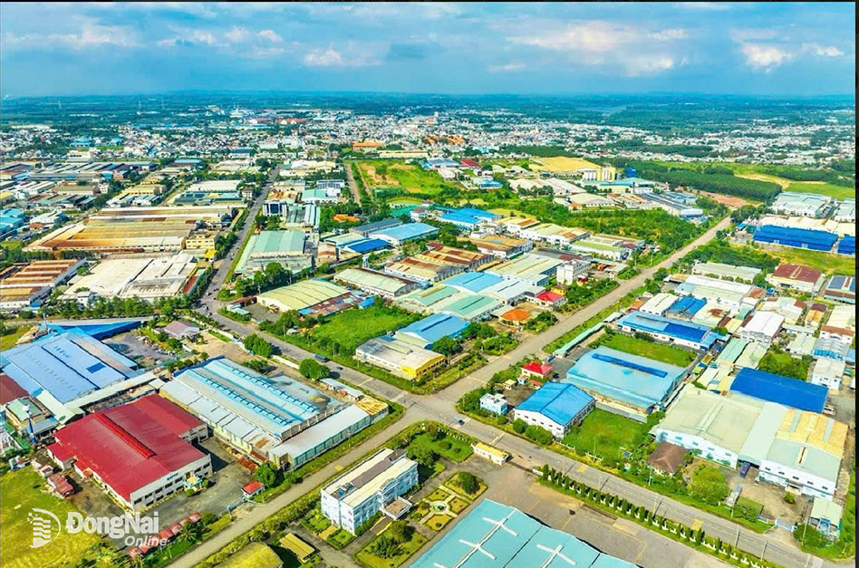

Giao Thông Đồng Nai - Đầu Mối Giao Thông Quan Trọng
Thế Mạnh, Vai Trò và Triển Vọng
Đồng Nai giữ vai trò là đầu mối giao thông quan trọng của vùng Đông Nam Bộ với hệ thống giao thông đa dạng: đường bộ, hàng không, đường sắt và đường thủy. Trong tương lai, tỉnh được kỳ vọng trở thành trung tâm kết nối vùng hiện đại, giúp thúc đẩy kinh tế và giảm tải logistics. Chúng ta cùng điểm qua và tìm hiểu các loại hình giao thông ở Đồng Nai nhé!
- Giao Thông Đường Bộ
- Cao tốc Phan Thiết - Dầu Giây
- Vành đai 3 TP.HCM
- Cao tốc Biên Hòa - Vũng Tàu
- Dự án thành phần 1: tổng chiều dài 16km thuộc địa bàn TP.Đồng Nai
- Dự án thành phần 2: tổng chiều dài khoảng 18,2 km thuộc địa bàn TP.Đồng Nai
- Dự án thành phần 3: tổng chiều dài khoảng 19,5 km thuộc địa bàn khu vực Bà Rịa – Vũng Tàu trước đây, nay thuộc TP.HCM
- Quốc Lộ 1A
- Quốc Lộ 51
- Giao Thông Hàng Không
- Sân bay Biên Hòa
-
Sân bay Biên Hòa là một trong những căn cứ không quân quan trọng và lâu đời nhất tại Việt Nam
- Nằm trên địa bàn phường Tân Phong và phường Trung Dũng, thành phố Biên Hòa, tỉnh Đồng Nai.
- Là căn cứ chiến lược phòng thủ hướng Nam của Tổ quốc, chịu trách nhiệm tuần tra, bảo vệ chủ quyền biển đảo, thềm lục địa và các mục tiêu trọng yếu khu vực Đông Nam Bộ và là nơi diễn ra các hoạt động huấn luyện bay, sẵn sàng chiến đấu, diễn tập cứu hộ cứu nạn của lực lượng Không quân Nhân dân Việt Nam.
- Sân bay Long Thành (Trọng điểm)
- Giai đoạn 1 (2020 - 2025): Xây dựng 1 đường băng (4.000 m x 75 m), 1 nhà ga hành khách với công suất 25 triệu khách/năm và 1,2 triệu tấn hàng hóa/năm;
- Giai đoạn 2 (2025 - 2035): Bổ sung thêm 1 đường băng và 1 nhà ga, nâng công suất của sân bay Long Thành lên 50 triệu khách/năm;
- Giai đoạn 3 (sau 2035): Hoàn thiện toàn bộ sân bay với 4 đường băng và 4 nhà ga, đạt công suất 100 triệu khách/năm và 5 triệu tấn hàng hóa/năm.
- Giao Thông Đường Sắt
- Mạng lưới đường sắt hiện hữu (Đường sắt Bắc - Nam)
- Giao Thông Đường Thủy
- Mạng lưới sông ngòi
- Sông Đồng Nai: Trục đường thủy huyết mạch lớn nhất, kết nối Đồng Nai với Bình Dương, TP.HCM. Luồng sông rộng, độ sâu tốt cho phép tàu tải trọng lớn và sà lan container di chuyển từ các khu công nghiệp đến cụm cảng biển.
- Sông Nhà Bè - Thị Vải: Tuyến đường thủy nước sâu tiếp giáp khu vực phía Nam của tỉnh (huyện Nhơn Trạch, Long Thành), là cửa ngõ kết nối thẳng ra biển Đông và cụm cảng nước sâu Cái Mép - Thị Vải.
- Hệ thống Cảng biển & Cảng thủy nội địa
- Cảng Phước An (Nhơn Trạch): Cảng biển lớn nhất tỉnh Đồng Nai, có khả năng đón tàu biển tải trọng lớn, giữ vai trò làm trung tâm logistics hậu phương quan trọng kết nối với Sân bay Long Thành và cụm cảng Cái Mép.
- Cảng Đồng Nai (Biên Hòa - Long Bình Tân): Cảng thủy nội địa/ICD chính chuyên xếp dỡ hàng container, hàng rời phục vụ vùng kinh tế trọng điểm Biên Hòa - Trảng Bom.
- Cảng Gò Dầu (Long Thành): Cảng chuyên dụng vận chuyển hóa chất, xăng dầu, hàng khô bách hóa.
Đồng Nai có hệ thống đường bộ phát triển khá đa dạng, giữ vai trò kết nối tỉnh với Thành phố Hồ Chí Minh, Bà Rịa – Vũng Tàu, Bình Dương và các tỉnh thuộc vùng Đông Nam Bộ. Mạng lưới này gồm các tuyến quốc lộ, cao tốc, đường tỉnh và đường đô thị, phục vụ cả nhu cầu đi lại của người dân và vận chuyển hàng hóa
Các cao tốc, quốc lộ huyết mạch của Đồng Nai:

Cao tốc Phan Thiết - Dầu Giây
- Ngày khởi công : 30/9/2020
- Ngày khánh thành : 29/4/2023
- Chiều dài : khoảng 99km ❨ đi qua Đồng Nai 51,5 km và Bình Thuận 47,5 km❩
- Tổng đầu tư : hơn 12.500 tỷ đồng
- Vai trò chủ yếu : nhằm giải quyết tình trạng quá tải nghiêm trọng trên Quốc lộ 1A kết nối vùng Đông Nam Bộ với Nam Trung Bộ, rút ngắn thời gian di chuyển giữa TP.HCM, Đồng Nai và Bình Thuận, tăng khả năng kết nối Đồng Nai với khu vực Nam Trung Bộ, hỗ trợ vận chuyển hàng hóa, phát triển du lịch và logistics.

Bản đồ Vành đai 3 TP.HCM
- Ngày khởi công : 18/06/2023
- Chiều dài : khoảng 76,34 km ❨ qua TP.HCM, Đồng Nai, Bình Dương và Long An ❩
Tổng mức đầu tư : 75.378 tỷ đồng
- Đồng Nai có 2 dự án gồm : Dự án thành phần 1A – Tân Vạn – Nhơn Trạch và Dự án thành phần giải phóng mặt bằng trên địa bàn Đồng Nai
Dự án thành phần 1A – Tân Vạn – Nhơn Trạch
- Ngày khởi công : 24/09/2022
- Ngày khánh thành : 19/8/2025
- Chiều dài : khoảng 8,14–8,22 km ❨trong đó khoảng 6,3 km qua Đồng Nai❩
- Tổng mức đầu tư : 6,955 tỷ đồng
- Vai trò : Tạo thêm tuyến vận chuyển hàng hóa, hỗ trợ logistics và thương mại, phân luồng giao thông từ xa, góp phần giảm áp lực cho các tuyến đường nội đô TP.HCM.
Dự án thành phần giải phóng mặt bằng trên địa bàn Đồng Nai ❨ bồi thường ❩
Dự án này không phải là một tuyến đường hay cây cầu riêng, mà là phần bồi thường, hỗ trợ, tái định cư và thu hồi đất để phục vụ việc xây dựng Vành đai 3 trên địa bàn tỉnh.
Tham khảo thêm
Cao Tốc Biên Hòa - Vũng Tàu
- Ngày khởi công : 18/6/2023
- Chiều dài : khoảng 53,7 km
- Tổng mức đầu tư : 17.837 tỷ đồng
- Được chia ra làm 3 dự án thành phần:
- Vai trò: Giải tỏa tình trạng quá tải nghiêm trọng cho Quốc lộ 51, đồng thời tạo trục kết nối giao thương nhanh chóng giữa các KCN tại Đồng Nai, Sân bay Long Thành và cụm cảng nước sâu Cái Mép – Thị Vải.

Bản đồ Quốc Lộ 1A
- Là tuyến giao thông huyết mạch quan trọng nhất của Việt Nam, nối liền từ Bắc vào Nam. Tuyến đi xuyên qua các đô thị và trung tâm công nghiệp lớn của tỉnh như TP. Biên Hòa, huyện Trảng Bom, TP. Long Khánh và huyện Xuân Lộc.
- Kết nối kinh tế nội tỉnh: Nối liền hàng loạt Khu công nghiệp lớn (KCN Amata, KCN Hố Nai, KCN Sông Mây, KCN Suối Tre...), tạo thành hành lang vận chuyển hàng hóa công nghiệp trọng điểm
- Có vai trò đặc biệt quan trọng vì tuyến đường đi xuyên qua khu vực trung tâm công nghiệp – đô thị của tỉnh, kết nối Đồng Nai với TP.HCM ở phía Tây và Bình Thuận ở phía Đông.
- Trong tương lai, QL1A sẽ phối hợp cùng tuyến Cao tốc Phan Thiết – Dầu Giây và đường sắt Bắc - Nam để phân luồng vận tải hiệu quả.

Bản đồ Quốc Lộ 51
- Chiều dài: khoảng hơn 40km
- Là sương sống kinh tế kết nối vùng: QL51 liên kết trực tiếp vùng tam giác kinh tế trọng điểm phía Nam gồm TP.HCM – Đồng Nai – Bà Rịa - Vũng Tàu
- Là cửa ngõ ra cảng biển & sân bay: đường vận tải chính dẫn ra cụm cảng nước sâu Cái Mép – Thị Vải và liên kết trực tiếp với Cảng hàng không quốc tế Long Thành
Hạ tầng hàng không tại Đồng Nai đang được đầu tư bứt phá để trở thành động lực phát triển mới của toàn tỉnh. Thay vì hoàn toàn phụ thuộc vào Sân bay Tân Sơn Nhất (TP.HCM) như trước đây, các dự án hàng không tại Đồng Nai giúp mở ra kết nối trực tiếp với toàn quốc và quốc tế, hình thành không gian đô thị – dịch vụ – logistics lấy hàng không làm trung tâm.
2 Sân bay mà Đồng Nai đang có:
- Là dự án hạ tầng giao thông trọng điểm quốc gia lớn nhất Việt Nam, được định hướng trở thành một trung tâm trung chuyển hàng không quốc tế tầm cỡ khu vực Đông Nam Á
- Nằm trên địa bàn huyện Long Thành, tỉnh Đồng Nai, cách TP. Hồ Chí Minh
- Tổng diện tích quy hoạch: 5.000 ha.
- Tổng mức đầu tư: 336.630 tỷ đồng
- Chủ đầu tư: Tổng công ty Cảng hàng không Việt Nam (ACV)

Sân bay Long Thành khi hoàn thiện
Sân bay Long Thành được chia ra làm 3 giai đoạn :


Bên trong sân bay Long Thành
- Khi hoàn thiện toàn bộ các giai đoạn, Cảng hàng không quốc tế Long Thành sẽ trở thành siêu sân bay lớn nhất Việt Nam đạt cấp 4F theo tiêu chuẩn của Tổ chức Hàng không Dân dụng Quốc tế (ICAO)
- Được định hướng trở thành một trung tâm trung chuyển hàng không quốc tế tầm cỡ khu vực châu Á - Thái Bình Dương
- Khi đi vào vận hành với công suất tối đa, sân bay có khả năng phục vụ tới 100 triệu lượt hành khách và tiếp nhận 5 triệu tấn hàng hóa mỗi năm
- Về cơ sở hạ tầng kỹ thuật, quy mô thực tế bao gồm hệ thống 4 đường cất hạ cánh song song hiện đại, 4 nhà ga hành khách đồng bộ cùng các công trình phụ trợ quy mô lớn khác, đáp ứng năng lực khai thác cho các dòng máy bay thân rộng lớn nhất thế giới hiện nay như Airbus A380 hay Boeing 747.
Hệ thống giao thông đường sắt tại Đồng Nai giữ vai trò hạt nhân, kết nối hành lang kinh tế trọng điểm phía Nam giữa TP.HCM, Đồng Nai và các tỉnh Đông Nam Bộ. Mạng lưới đường sắt tại đây đang trải qua bước chuyển mình lớn từ đường sắt truyền thống sang đường sắt tốc độ cao và đường sắt đô thị (metro) gắn liền với đô thị Sân bay Quốc tế Long Thành.
- Tuyến đường sắt Bắc - Nam chạy qua địa phận tỉnh Đồng Nai dài khoảng 89 km
- Là trục vận tải hành khách và hàng hóa quan trọng kết nối vùng Đông Nam Bộ với Nam Trung Bộ và miền Bắc
- Trong đó có đi qua ga Biên Hòa : Là ga hạt nhân lớn nhất tỉnh, phục vụ lượng lớn khách du lịch, người dân di chuyển đi TP.HCM và các tỉnh miền Trung/Bắc

Ga Biên Hòa
-> Vai trò: Đường sắt kết hợp hoàn hảo với đường cao tốc, cảng biển (Thị Vải - Cái Mép, Phước An) và đường hàng không (Sân bay Long Thành), giảm thiểu chi phí vận tải hàng hóa cho hàng chục khu công nghiệp.
- Đồng Nai hiện có 13 con sông và kênh
- Tổng chiều dài: hơn 2,3 ngàn km
- Hệ thống giao thông đường thủy tại tỉnh Đồng Nai giữ vị trí cực kỳ quan trọng nhờ mạng lưới sông ngòi tự nhiên chằng chịt, kết nối trực tiếp vùng Đông Nam Bộ với TP.HCM và cụm cảng biển quốc tế.
- Trong đó lớn nhất là sông Đồng Nai với chiều dài đoạn chảy qua địa bàn tỉnh khoảng 220km. Đây được xem là nguồn tài nguyên lớn để phát triển giao thông đường thủy.

Sông Đồng Nai
Mạng lưới cảng thủy tại Đồng Nai được quy hoạch đồng bộ phục vụ nhu cầu xuất nhập khẩu của hàng chục khu công nghiệp:
Giao Thông Đường Thủy có vai trò to lớn: giảm áp lực cho đường bộ bởi vận tải đường thủy giúp giảm tải đáng kể các tuyến quốc lộ trọng điểm (QL1A, QL51) và đường cao tốc. Tối ưu chi phí, khi chi phí vận chuyển sà lan, tàu thủy chở container thấp hơn 10–15% so với đường bộ, giúp tối ưu hóa chuỗi cung ứng cho các doanh nghiệp xuất nhập khẩu.
Hạ tầng
- Hạ tầng Đô thị
- Các đô thị hạt nhân: Thành phố Biên Hòa (đô thị loại I), Thành phố Long Khánh, các đô thị mới như Nhơn Trạch, Long Thành.
- Hình thành các khu đô thị sinh thái, khu đô thị sân bay và hệ thống công viên cây xanh dọc sông.
- Hạ tầng Kỹ thuật & Công nghiệp
- Hạ tầng Khu công nghiệp (KCN)
- Hạ tầng Năng lượng & Cấp điện
- Hạ tầng Cấp thoát nước & Môi trường
- Hạ tầng Viễn thông & Công nghệ thông tin
- Hạ tầng Xã hội & Tiện ích Đô thị
- Nhà ở & Bất động sản: Phát triển mạnh chuỗi đô thị ven sông Đồng Nai và các khu dân cư hiện đại. Đồng thời, tỉnh đang đẩy nhanh tiến độ các dự án nhà ở xã hội và nhà ở công nhân nhằm đáp ứng nhu cầu cho lực lượng lao động khổng lồ.
- Y tế & Giáo dục: Sở hữu hệ thống bệnh viện đa khoa, chuyên khoa quy mô lớn (Bệnh viện Đa khoa Đồng Nai, Bệnh viện Nhi đồng Đồng Nai,...) cùng hệ thống các trường đại học, cao đẳng chất lượng cao cung cấp nguồn nhân lực cho vùng.
Đồng Nai có định hướng phát triển hệ thống đô thị thông minh, hiện đại và bền vững quanh trục sông Đồng Nai và khu vực phụ cận sân bay Long Thành. Có tốc độ đô thị hóa nhanh, không gian phát triển mở rộng, tính kết nối liên vùng cao.
Chuyển dịch từ công nghiệp truyền thống sang công nghiệp xanh, công nghệ cao, tiết kiệm tài nguyên và gắn với hệ sinh thái hàng không quanh Sân bay Long Thành
- Là một trong những thủ phủ công nghiệp lớn nhất cả nước.
- Hạ tầng các KCN tại Đồng Nai được đầu tư đồng bộ về điện, nước, xử lý chất thải và viễn thông, từng bước chuyển đổi sang mô hình KCN sinh thái / KCN xanh
- Đồng Nai hiện nay có khoảng 59 khu công nghiệp đã được thành lập với tổng diện tích 21.581,22 ha nhưng khoảng 37 – 44 khu công nghiệp đang hoạt động.
- Các khu công nghiệp lớn và tiêu biểu tại đây gồm có: Amata, Nhơn Trạch (I, II, III, V, VI), Long Thành, Giang Điền, Lộc An – Bình Sơn, và các khu công nghiệp thuộc khu vực sáp nhập như Becamex Bình Phước, Hoa Lư, Ledana,...

1 KCN ở Đồng Nai
- Hệ thống nguồn và lưới điện ổn định, đảm bảo cung cấp liên tục cho sản xuất công nghiệp và đời sống dân sinh.
- Có nguồn điện đa dạng: Nhà máy thủy điện Trị An, các nhà máy nhiệt điện, điện khí, cùng hệ thống điện mặt trời mái nhà tại các KCN với lưới điện 500kV, 220kV và 110kV phủ rộng toàn tỉnh.


Tấm pin năng lượng mặt trời & Thủy điện Trị An
Có khả năng tự cân đối và cung ứng điện năng lớn, tiên phong trong chuyển dịch năng lượng sạch. Là nền tảng vững chắc để phát triển ngành công nghiệp nặng, công nghệ cao và thu hút các dự án sản xuất lớn.
Hệ thống cấp nước sạch rộng khắp tỉnh, ưu tiên bảo vệ nguồn nước ngọt sông Đồng Nai và xử lý nước thải công nghiệp. Tỉnh đang đẩy mạnh đầu tư các dự án nâng công suất cấp nước sạch sinh hoạt và công nghiệp; đồng thời tập trung xây dựng hệ thống thu gom, xử lý nước thải sinh hoạt tại các đô thị lớn như Biên Hòa, Long Thành, Nhơn Trạch cùng với Các nhà máy nước lớn: Nhà máy nước Thiện Tân, Nhơn Trạch, Biên Hòa... với tổng công suất hàng trăm nghìn m3 ngày-đêm.

Nhà máy nước Thiện Tân
Có thế mạnh là trữ lượng nước ngọt dồi dào từ hồ Trị An và sông Đồng Nai. Có vai trò to lớn trong việc bảo đảm an ninh nguồn nước cho sinh hoạt, sản xuất công nghiệp và bảo vệ môi trường sinh thái lâu dài.
Hạ tầng lưới điện được phủ rộng đảm bảo cung cấp liên tục cho sản xuất; hạ tầng viễn thông/5G được phủ sóng diện rộng hướng tới mục tiêu xây dựng Đô thị thông minh (Smart City). Cùng với sự hợp tác mạnh mẽ với các tập đoàn viễn thông lớn (VNPT, Viettel, FPT) để nâng cấp hạ tầng công nghệ nhằm thúc đẩy chuyển đổi số trong quản lý nhà nước, hỗ trợ doanh nghiệp tối ưu hóa sản xuất thông minh và phục vụ nhu cầu kết nối của người dân.

Nhà ở xã hội

Bệnh viện Đa khoa Đồng Nai
NGUỒN THAM KHẢO CHÍNH THỐNG
- Cổng Thông tin điện tử tỉnh Đồng Nai
- Sở Giao thông Vận tải tỉnh Đồng Nai
- Sở Kế hoạch và Đầu tư tỉnh Đồng Nai
- Cổng Thông tin điện tử Chính phủ & Báo Điện tử Chính phủ
- Quyết định số 586/QĐ-TTg của Thủ tướng Chính phủ
- Báo Nhân Dân & Thông tấn xã Việt Nam
- Nghị quyết về Phát triển đô thị theo định hướng giao thông công cộng (TOD)
- Đài Phát thanh - Truyền hình Đồng Nai (ĐNRT)